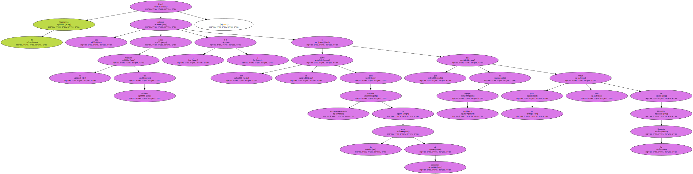
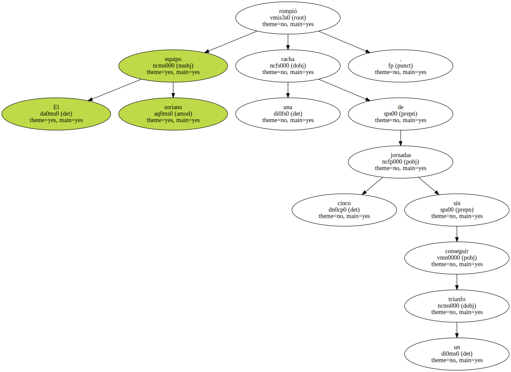
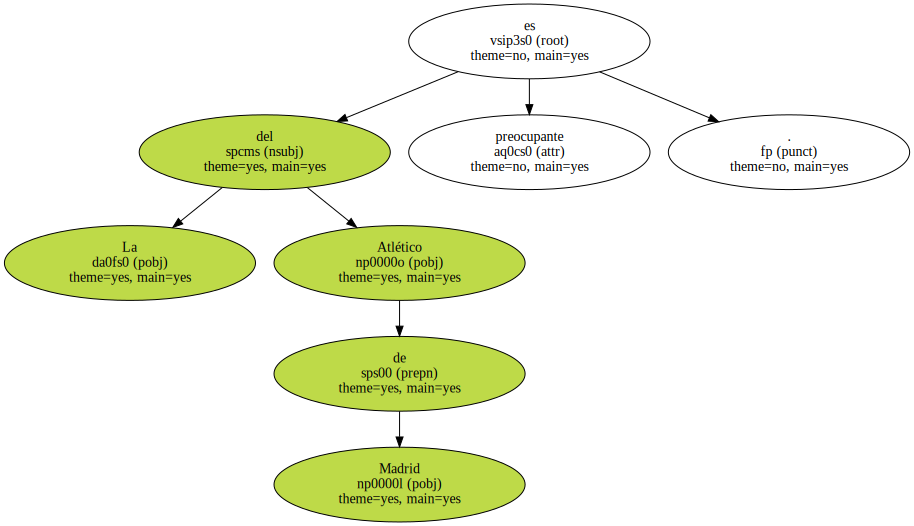
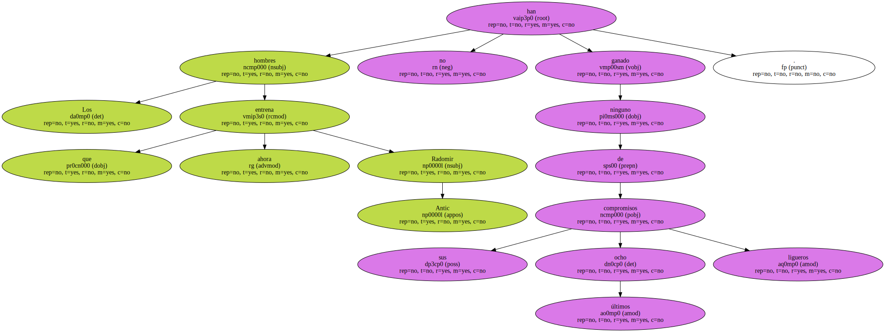

EL NUMANCIA DEJA AL ATLÉTICO MÁS CERCA DE.

El Numancia firmó una goleada sobre el Atlético de Madrid ( 3-0 ) que le sirve para alejarse momentáneamente de la zona de descenso y que deja al equipo rojiblanco un poco más cerca de la Segunda División.
El equipo soriano rompió una racha de cinco jornadas sin conseguir un triunfo.
La del Atlético de Madrid es preocupante.
Los hombres que ahora entrena Radomir Antic no han ganado ninguno de sus últimos ocho compromisos ligueros.
